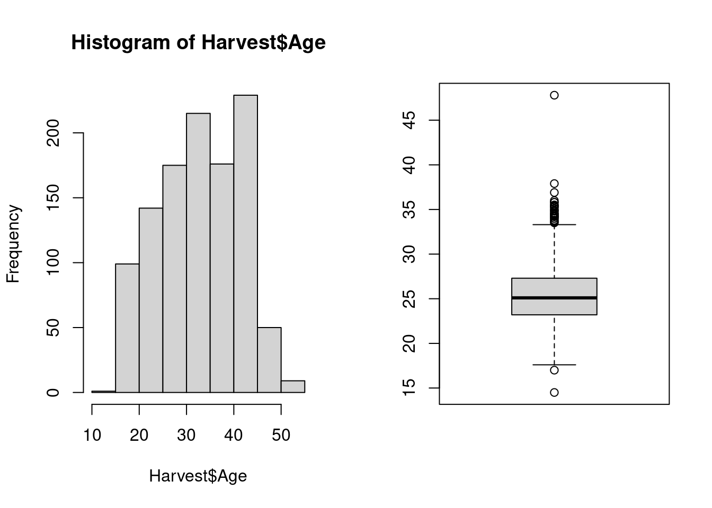
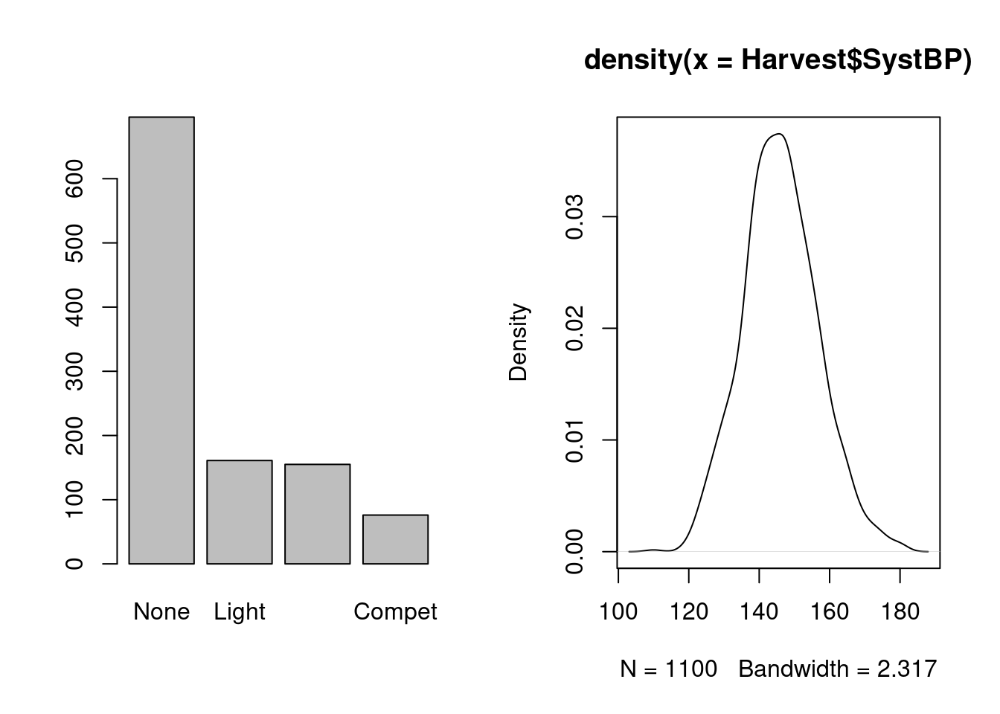
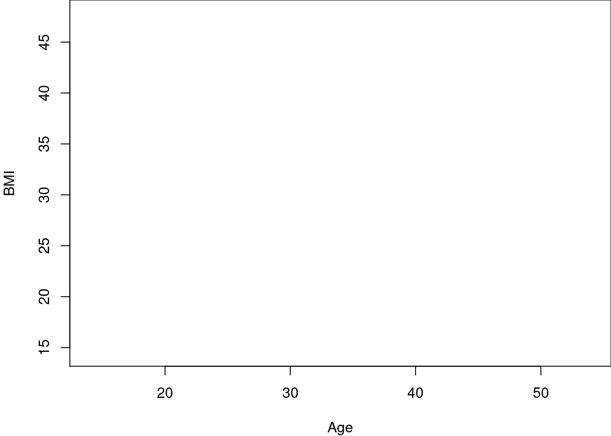
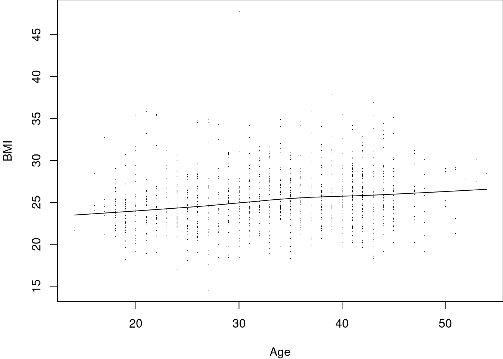
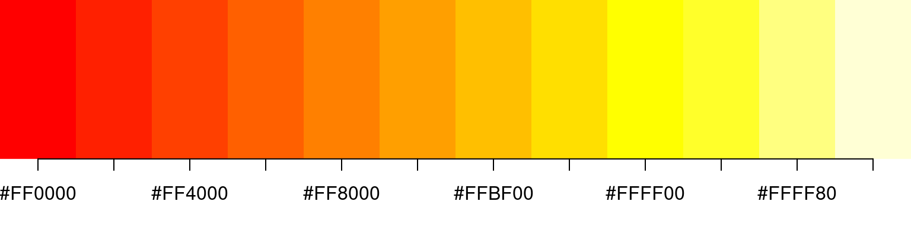
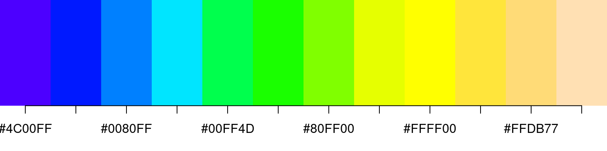
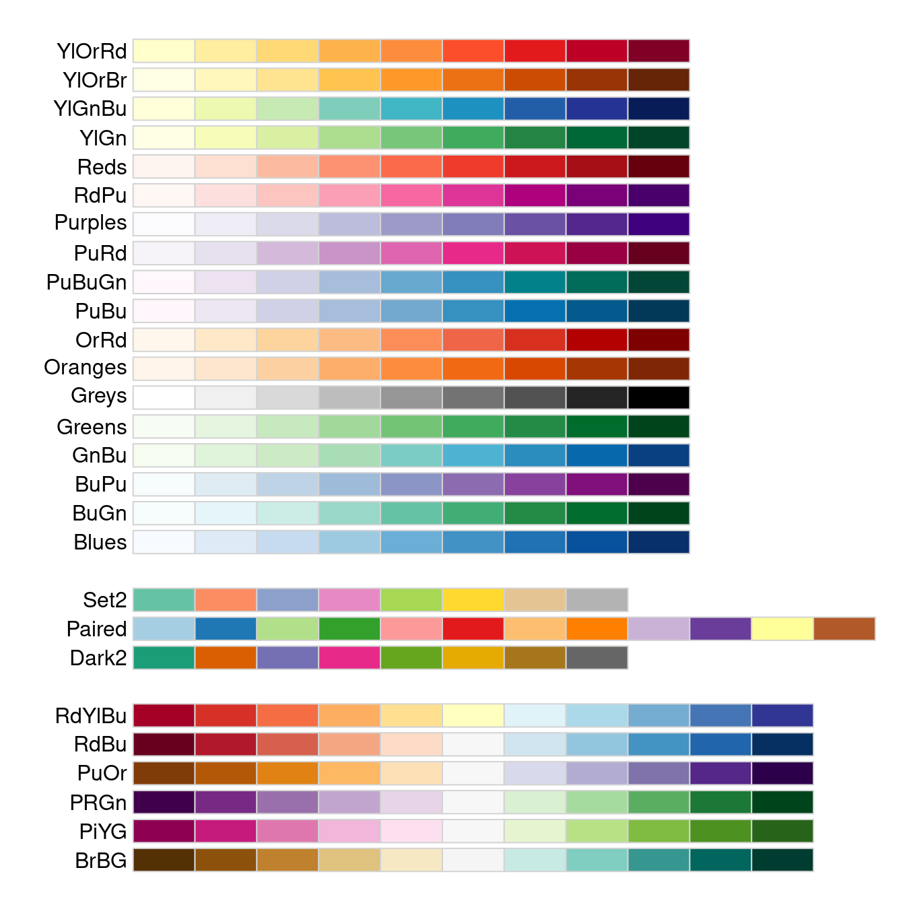

11 Graphics in base R
11.1 Overview
In this chapter, we will look at the plotting functions that are available in R by default. These base graphics or base plots are what we have used so far in the previous chapters: while not especially fancy, they generally get the job done (i.e. visualize the data or results), and are well-integrated in the R language. Here, we will
- introduce more examples for plots,
- demonstrate how the appearance of base plots can be modified to include different colors, symbols, labels etc.
- demonstrate how to build a custom plot from scratch,
- look at available color definitions and -schemes,
- display plots, and save them directly to a file, without having to use the RStudio GUI.
The data example for this chapter is a subset of the Harvest cohort, which contains data on individuals with low or pre-hypertension: systolic and diastolic blood pressure as primary outcomes, with relevant demographic and lifestyle covariates, namely age, sex, BMI, smoking status, physical activity level and resting heart rate59.
11.2 Base plots
The original concepts and technology underlying base plots are old, going back to the 1990s, when plotting was still a non-trivial effort, and have grown organically over time, rather than being developed systematically. As a consequence, base plots tend to look somewhat old-fashioned, and the defaults make little use of colors and annotation. However, the system is built to be flexible, and you can add as much color and annotation as you like – however, this can be complicated and may require knowledge about R internal affairs.
Both user interface and appearance of the R base system and its extensions are often inconsistent. For example, when we compare a histogram and a boxplot of the same data generated with the functions hist and boxplot that we have used before, we see that the histogram has an informative title, axis labels, and no box around the plot; in contrast, the boxplot has no title and no axis labels, but the plotting area is surrounded by a box.

Base plot functions can be applied not just to raw data, but also to data summaries: we have already seen the function barplot for tabulated frequencies; we can also do density plots, a fancy version of a histogram where we estimate the density curve and plot it: the distribution here seems reasonably symmetric, with a center at or just under 150.

We have already seen scatterplots for of two variables in Section 9.3.1, both the basic variant using the formula notation, which has nice axis labels, and the smoothed version, which is a different function, with a different user interface, and not so nice labels.
There are also plots function specifically for multivariate data: pairs takes a data frame of numerical variables, and produces all pair-wise scatterplots, arranged as a table. Below, we see age, BMI, blood pressure and heart rate, all plotted against each other; note that the plots above and below the diagonal show the same variables, just with reversed x- and y-axis; for our exapmple here, this is not very informative: because there are too many data points, we cannot see much due to overplotting.
An interesting variant of showing multiple scatterplots in the same graphic is the conditioning plot, which allows us to show scatterplots of two variables for different values of one or multiple conditioning variables. We use the formula interface for function coplot a plot of BMI against age, separately for each sex
Both pairs and coplot are versatile, but require quite some effort to unlock that versatility60
Table 11.1 lists some examples of plots that are available “out of the box”, i.e. when starting an ordinary R session with default packages attached; below, we show some applications to our current example data.
| Function | Description |
|---|---|
| assocplot | Deviations from independence in a frequency table |
| barplot | Barplot of frequencies |
| boxplot | Box-and-whisker plot |
| cdplot | Conditional density plot |
| coplot | Conditional (scatter-) plot |
| heatmap | Heatmap with dendrograms |
| matplot | Scatterplot of matrix columns |
| mosaicplot | Proportions in a frequency table |
| plot.default | Scatterplot |
| spineplot | Generalized barplot/histogram |
| smoothScatter | Smoothed high-density scatterplot |
| interaction.plot | Means by 2-way grouping |
| qqplot | General quantile plot |
| qqnorm | Normal quantile plot |
| termplot | Fitted model term (polynomial, spline) |

11.3 Graphical parameters
As you would expect at this point, the default appearance of base plots can be modified via appropriate arguments to the corresponding plotting functions. These arguments are also referred to as graphical parameters.
For example, the standard plot-function has arguments main, xlab and ylab that can be used to specify an informative plot title and axis labels:
We can also change the symbol that is plotted at each (x,y)-location, as well as its color and size, via arguments pch (for plotting character), col and cex (for character expansion); if we want to, say, mark each measurement of age and BMI with a half-sized X in blue, we can specify
A different look… not a great look, but different.
Common graphical parameters like main and col are almost universally supported by base plotting functions, though their exact meaning will differ according to plot type (e.g. col affects boxplot differently than a scatterplot). More specialized parameters like pch will not always make sense (e.g. in a barplot). When in doubt, refer to the documentation for the corresponding plotting function.
Vectorized graphical parameters
Graphical parameters like col, pch and cex can often be vectorized: this means we can specify a whole vector of colors, symbols etc., which can be a very convenient way of highlighting subsets of data.
Let’s say that in our scatterplot example from above, we want to use different colors to indicate the sex of a participant. We can use the function ifelse to generate a suitable vector of colors: based on the values of the logical expression Harvest$Sex == "M", it will return "red" if the participant is male, and "blue" otherwise61. The results is saved as vector mycol, with one element for each row of Harvest:
> mycol <- ifelse(Harvest$Sex == "M", "red", "blue")
> Harvest$Sex[1:5]
[1] M F F M F
Levels: F M
> mycol[1:5]
[1] "red" "blue" "blue" "red" "blue"This works as intended:
In the same way, we can set a different plotting symbol to indicate the smoking status of a participant:
> mypch <- ifelse(Harvest$Smoking == "yes", "x", "o")
> table(mypch, Harvest$Smoking)
mypch no yes
o 867 0
x 0 229We can now feed these vectors of colors and symbols into the plot-function, using arguments col and pch:
Again, not exactly pretty, due questionable aesthetic choices on my part, but we have managed to encode information on two extra variables, namely sex and smoking status, in the scatterplot of age and BMI.
For a reasonably complex plot like this, a legend explaining what the different symbols and colors indicate is not really optional. As you will have guessed at this point, there’s a function for that, and it is called legend:
> plot(BMI ~ Age, Harvest, col = mycol, pch = mypch)
> legend("topright", c("Male smoker", "Female smoker", "Male non-smoker", "Female non-smoker"), col = rep(c("blue",
+ "red"), 2), pch = c("x", "x", "o", "o"), cex = 0.75)
We specify the position of the legend in the plot, the text to be displayed, as well as the colors and symbols that the text describes (good use of function rep for saving some typing with the colors); argument cex here does not encode any information (though it could!), but only makes the legend about 25% smaller.
11.4 Displaying and saving plots
So far, we have not been overly concerned with where the plots we generate appear: in base R, a separate plotting window magically appears (Section 2.3.2), and in RStudio, the Plots-tab handles all plot-related activities (Section 3.2.5). These are parts of the graphical user interface, and while they are convenient in interactive analysis, we seem to have little control over them so far.
Similar for saving plots to files: again, the right-click context menu of the base R plotting window and the Export-button of the RStudio Plots-tab offer basic functionality, but we have only limited control over how the plot will be transferred from the GUI to a file, and the appearance of these saved plots is often not that great (okay for an informal report, but generally not good enough for something more polished).
The concept that unifies display of graphics in R/RStudio and saving graphics to a file is that of a graphical device. Such a device is a container that can accept instructions from plotting functions to add graphical elements like lines, dots, axes, text etc. to an empty canvas (plotting area). From R’s point of view, it does not matter what the device does, just that it will accept plotting instructions. However:
an interactive device like the plotting window in R, or the Plots-tab in RStudio, will draw the graphical elements onscreen for visual inspection,
a file device will translate the graphical instructions into a specified format and save the result to a file, which can then be copied, shared, imported into other software etc.
Interactive devices are generally handled quite smoothly by R/RStudio: e.g. if no device is active, either directly after starting the program, or because you have closed the previously active plotting window, any of the plotting functions discussed so far will simply start a new device/plotting window, without you having to do anything (though see Section 11.5 below)62.
File devices are not handled automagically, but they work with the same logic: first you open the device using a suitable function, then create your intended plot(s) exactly as you would have interactively, and once you are done, close the device. For example, we use the function jpeg to open a file device of type JPEG named myplot.jpg in the current working directory, create a variant of our example scatterplot, then we close the device:
> jpeg("myplot.jpg")
> plot(BMI ~ Age, Harvest, col = "blue", pch = 19, main = "Harvest BMI vs Age")
> dev.off()Once you have closed the device, the resulting file can be viewed, inserted, edited etc. like any other image file63.
There are numerous different file devices available, corresponding to different graphical formats, both for raster formats like JPEG or PNG, and for vector formats like SVG (or PDF)64. The functions for opening them have generally have the same name as the format, see e.g. ?png or ?svg.
There are two advantages of using file devices directly instead of using the GUI export options:
You can create and save plots in a script directly, instead of using a script to generate a plot and then saving it manually. This allows for a fully scripted workflow to generate your results including any number of plots.
You can control the appearance and quality of your plots in terms of plot size, resolution, background color, font size etc. via arguments to the device functions.
For example, if you look at the file myplot.jpg generated in the previous code snippet, you will see that the text labels appear a bit fuzzy, and the font size is small compared to the rest of the plot. To address this, I can increase the resolution of the plot file to 300 dpi, the quality to 100% (i.e. lossless compression), and change the overall plot to size 12.5 cm cm (suitable for e.g. inclusion on an A4 page):
> jpeg("myplot2.jpg", width = 12.5, height = 12.5, units = "cm", res = 300, quality = 100)
> plot(BMI ~ Age, Harvest, col = "blue", pch = 19, main = "Harvest BMI vs Age")
> dev.off()If you open the new file in a viewer, it will be crisper, and the size of the labels is more proportional to the overall plot size, too.
Of course, there is a price to pay for this: if we look at all .jpg files in the current working directory, and their file sizes (in bytes), we see that the crisper version is more than ten times bigger, which may or may not be acceptable.
> dir(pattern = "*.jpg")
[1] "myplot.jpg" "myplot2.jpg"
> file.size(dir(pattern = "*.jpg"))
[1] 33384 42375311.4.1 Controlling a device through par
We have already seen how graphical parameters passed as arguments to a plotting function can effect the appearance of a plot. However, we can also set graphical parameters directly for the current graphical device using the function par: in this case, the parameter value becomes the new default for the current device for all subsequent plots, until either the device is closed or the parameter is changed again via par65. For example, if we set the plotting character as pch=19 as above, but using par, all subsequent plots will use a small solid dot as plotting character:
If we want to change the plotting symbol back to the default open circle, we can either call par again as par(pch="o"), or close the device and open a new one66.
par is extremely powerful: there is a total of \(n = 72\) different graphical parameters, of which \(n = 66\) can be modified by the user to affect the look of a plot67; you can use it to e.g.
- change the size, color and font of titles, labels and axes (
cex.*,col.*,font.*/family), - change the type and scaling of plot axes (
xaxp/yaxp,xaxs/yaxs,xaxt/yaxt,xlog/ylog), - change inner and outer margins surrounding the plot area (
mar/mai,oma/omi), - split up the plotting are into multiple subplots (
mfrow/mfcol).
Generally, you neither want nor need to control plots at this detailed level, so this is mostly FYI, though splitting up the plotting area into separate panels can be often useful: both mfrow and mfcol accept as argument a vector of two positive integers that indicate into how many rows (first element) and columns (second element) the current device should be split. For example, if we want to put two plots side by side, this corresponds to a grid of 1 \(\times\) 2 panels, which can be specified as

If you are interested in fine-tuning graphical displays of data, the documentation for par is essential reading for understanding the technical details of the base graphics system. However, if you are new to R, I suggest that you have a look at Section 12 first, where we discuss the graphics system implemented by package ggplot2, before you go down the rabbit hole that the base graphics system can be.
11.5 High- vs. low-level plotting
Base plotting functions can be roughly classified as high-level and low-level:
High-level plotting functions visualize data: they accept either raw data or statistical results as main input, often specified via a formula interface, and generally start a new plot/device when called. Examples we have seen are
boxplot,histand all functions listed in Table 11.1.Low-level plotting functions generally add graphical elements to an existing plot; while they sometimes accept data as input, they are more often built around graphical parameters as seen e.g. in Section 11.4.1. Examples are
legend,abline,title,points,segmentsetc.
The idea is that high-level functions allow specification of a plot to answer a question about the data, in terms of a specific visualization task: e.g. “I want to see the distribution of BMI in the Harvest data; draw an informative histogram” - this can be done without reference to the base graphical system. So theoretically, we could just live off the rich set of high-level functions with default setting - however, if we want to produce something more polished for publication, we often need to understand details of the underlying graphical parameters, either as argument to the high-level function itself (e.g. pch for plot) or via a low-level function that adds to the high-level plot (e.g. legend.)
Internally, high-level functions are generally assembled from calls to low-level functions; let’s demonstrate this by building a modified scatterplot of BMI vs age below. This consists of multiple steps:
- Set up an empty plot: call the
plot-function to set up a new plot, but use graphical parameters suppress all output (no data points, no axes etc.) - Add the plot axes via calls to
axis. - Add a box around the plotting area between the axes.
- Add a title and axis labels.
- Add the actual data points to the scatter plot via function
points. - Add a loess smoother the hard way, by calculating a smoothed curve as a set of x- and y-coordinates, and adding that curve via function
lines.
> # We start from scratch: this only sets up an empty plot
> plot(BMI ~ Age, Harvest, type = "n", xaxt = "n", yaxt = "n", bty = "n", xlab = "", ylab = "")

> # Fit the loess smoother & add it to plot Exclude missing values
> ndx <- !is.na(Harvest$Age) & !is.na(Harvest$BMI)
> smooth <- lowess(Harvest$Age[ndx], Harvest$BMI[ndx])
> str(smooth) # Simple list with x- and y-coordinates
List of 2
$ x: num [1:1058] 14 16 16 16 16 17 17 17 17 17 ...
$ y: num [1:1058] 23.5 23.6 23.6 23.6 23.6 ...
> lines(smooth) Note that this incremental build of a plot gives us a lot of control at each step: e.g. we can choose to puxt axes at the top and right of the plot, instead or in addition to at the bottom / left, or we can limit the range of the data where we want to plot the smoothing curve.
Exercise: Have a look at the first example plot in Section @{base-plots-base-plots}, where the differences between the appearance of the default histogram and boxplot are highlighted; using low-level plotting functions. Re-create the side-by-side plot seen there, but make the appearance of the two plots as similar as possible.
11.6 Using colors
11.6.1 Specifying colors by name
We have briefly seen the use of colors above for vectorized graphical parameters in Section 11.3, where we just stated the names of primary colors like "red" and "blue" as values for argument col. As you may have guessed, this also works for a range of other “obvious” color names:
> simple_colors <- c("red", "blue", "green", "yellow", "black", "white", "brown")
> show_colors(simple_colors)This is easy and intuitive to use, but may at first glance appear somewhat limited - but it is really not: depending on your operating system setup, R will understand several hundred different color names. For example, on the machine where this introduction is compiled, R understands 657 different color names, corresponding to 502$ distinct colors (some colors have more than one name).
This is a small random sample:
> example_colors <- sample(colors(distinct = TRUE), size = 10)
> example_colors
[1] "maroon2" "gray31" "gold3" "royalblue" "tan1"
[6] "lightsalmon4" "lemonchiffon2" "steelblue1" "gray52" "lightslategray"
> show_colors(example_colors)Of course, this leads directly to another problem: who can remember and distinguish hundreds of colors, many with names that are fancy rather than helpful (bisque), or neither fancy nor helpful (white2)? The next section shows a more systematic way of exploring the space of possible colors.
Exercise: Re-do the scatterplot with vectorized graphical parameters from Section 11.3, using colors chartreuse and hotpink, including a legend. In your opinion, is this an aesthetic improvement?
11.6.2 Specifying colors mathematically
A more systematic approach to defining colors is via a color model, where each color is represented by a set of numbers. The classic example for this is the RGB color model68, which mixes colors as a sum of a red, green and blue component. This color model is implemented in base
R via function rgb_: by default, the intensity of each component of the color model is specified as a number between zero and one, zero corresponding to zero intensity, and one to full intensity. For example, if we want to specify color that is mostly green, with some red and a dash of blue, we can use
The return value is a string encoding a hexadecimal number (indicated by the leading #) which can be used everywhere instead of the traditional color names described above (e.g. for argument col).
Note that above I have used an extra fourth argument alpha, which controls the transparency of the color, again with values between zero (completely transparent) to one (completely solid) - this can be useful in situations where we want to control overplotting; as a result, the hexadecimal string has eight hexadecimal digits, corresponding to eight bytes69.
The string we see above corresponds to something I would call a minty green:
On account of my somewhat divergent color perception, you may feel free to disagree with this characterization.
R supports a number of other color models (see e.g. ?hsv and ?hcl), but the short and the long of it is that we are not limited to a set of predefined colors with obscure names, bur can define whatever color we damn well please. The downside of this is of course that most of the time, we do not care that deeply about the exact shade of pink used in a plot, and while the hexadecimal codes are readable, they are still awkward; in other words, while color models are great for implementing the underlying plotting infrastructure, they are not all that commonly used on their own in actual data visualization.
Excercise: Use the function col2rgb to verify
- that the primary colors
"red","blue"and"green"in R deserve their names, - what exactly the difference is between colors
"gray52"and"lightslategray"in our random sample of colors above.
11.6.3 Using sets of colors: palettes
So both color names and color models come with some drawbacks, as outlined above. The practical solution to these drawbacks is the use of pre-defined sets of colors, called palettes in R: in data visualization, we generally use color for contrast, e.g. between groups of data points, meaning we usually need to specify more than one color at a time; therefore, having an easy way of specifying a vector of colors of variable length makes life much easier than having to spell out a vector of color names or - codes manually.
A palette function takes as argument the number of different colors required, and returns a character vector of the specified length consisting of distinct color codes. For example, the function heat.colors returns a vector of colors on a heat spectrum, from red to white; if we want 12 colors along this spectrum, we just call
> heat.colors(12)
[1] "#FF0000" "#FF2000" "#FF4000" "#FF6000" "#FF8000" "#FF9F00" "#FFBF00" "#FFDF00" "#FFFF00"
[10] "#FFFF2A" "#FFFF80" "#FFFFD5"
> show_colors(heat.colors(12))
We can do this for as little as two colors, which turns out as red vs yellow, suitable for comparing two groups of data points, or 120 colors or more, which gives us a nice smooth transition useful e.g. for a heatmap; and if we add some transparency to the 120-color spread, we get nice peach tones:
There a number of different palette functions available in base R, like e.g. rainbow and topo.colors, which provide the same service, just along different axes in the color space:

These traditional palettes are based on physical (heat, rainbow) or traditional (topgraphic maps) color schemes, and while intuitive, do not work equally well under all circumstances. A more modern set of palettes, which are designed for different uses cases, and have been empirically tested for for visual differentiation, are the Brewer palettes70. These are implemented in the R package RColorBrewer, which comes with a handy diaply function to show all its palettes:
Note that in the display above, the palettes are shown in three distinct blocks, corresponding to three different types of palettes with different use cases:
At the top, we see sequential palettes, which are designed to display a gradient across groups, from lowest to highest; these palettes are most useful for displaying ordinal variables, e.g. age categories or BMI weight status.
In the middle, we see qualitative palettes, which are designed to show differences between distinct groups that have no special ordering; these palettes are most use for visualizing nominal variable, e.g. county of residence or country of origin.
At the bottom, we see divergent palettes, which show deviations below or above a central reference value (often zero); these are most useful for showing differences of some kind, e.g. standardized variables, log odds ratios, or log fold changes.
I especially appreciate about the Brewer palettes that they have a subset explicitly easier to process for color-impaired persons like myself:

Usage of the Brewer palettes is straightforward: after reflecting on the intended use case (sequential, qualitative, divergent), pick a palette function with an color scheme and a sufficient number of distinct levels, and generate the vector of colors. For example, here I have chosen an attractive diverging palette spanning from purple to green with 10 distinct levels:
11.7 Next steps
Complete alternative systems for generating graphics in R have been implemented as packages, specifically lattice and ggplot2. As these systems were designed more coherently, and built using more modern plotting infrastructure (the grid-package), they are more consistent in appearance than base graphics, and allow specification of complex high-level plots. We will have a close look at the ggplot2-package in Chapter 12.
In Section 14, we will have a short look at how to control the appearance of plots in compiled script and dynamic documents, building on the graphical device concept we have seen above.
As mentioned initially, there are many, many packages available that implement useful graphical functionality in base R. For example:
forploimplements a nice interface to specify forest plots.hnpoffers sophisticated normal quantile plots for data and model residuals.showtextallows easier use of various fonts and fot types in R graphics71.khromaadds a number of new palette functions for scientific visualization72.- For the more theoretically inclined, the package
latex2expallows the use of expressions in R plots.
See http://www.statsci.org/data/general/harvest.html for details and a link to the full data.↩︎
See
example(pairs)andexample(coplot)to demonstrate both aspects.↩︎Technically, the function
ifelsehas three arguments: the first one is a logical vector, in our example generated via the logical expressionHarvest$Sex == "M", the second and third are vectors that specify which value is returned forTRUEandFALSE, respectively. Here, the alternatives are just the 1-element vectors"blue"and"red", but as these are automatically extended to the length of the first argument, this works as intended (see also comments on theround-example in Section 5.3.1).↩︎There are some cases where interacting with plotting windows directly can be useful: e.g. the RStudio Plots-tab is not the most stable and may crash, so that it can be useful to close it with
dev.off()and re-start it with a new plot, or explicitly withdev.new(). If the Plots-tab is already active, then each extra call ofdev.new()will generate a new external plotting window, which can be helpful for large and/or complex plots, or for comparing two plots side-by-side.Let’s look at a hypothetical example (replicate at the command line in a newly started RStudio session to see how it works interactively):
> # Make sure we have an active Plots-tab... > hist(rnorm(10000)) > # Start a new device outside of RStudio > dev.new() > hist(rnorm(10000), col = "red") > ### Close the device: kill window or... > dev.off() > # Once more will close RStudio device > dev.off() > # New plot opens new device > hist(rnorm(10000), col = "blue")If you find this kind of thing useful, you will probably also want to look at the functions
dev.list,dev.curanddev.set.↩︎Note however that the device will generally only be a valid image file as described after you close the device - as long as the device is open, R still allows you to add more graphical elements, so the file is not complete yet; only by closing the device, you indicate that you are done with plotting, and the final version of the plot will be written out completely to hard disk.↩︎
See https://en.wikipedia.org/wiki/Raster_graphics and https://en.wikipedia.org/wiki/Vector_graphics for details if you are unsure.↩︎
Though it’s important to note that the different plotting functions may interpret these defaults differently, e.g. parameter
par(col="blue")will have different effects forhist(Harvest$BMI),boxplot(Harvest$BMI)andplot(Harvest$BMI). As mentioned above, base graphics are not always strong on consistency.↩︎You may notice that the graphical parameter can be specified as either a character or an integer code - we have used characters in our examples so far, as they are simple and intuitive, but you can achieve some pleasing effects by using integer codes 1-25 instead: see
?pointsfor a handy reference.↩︎Note that this is just the common true color standard used in most web design https://en.wikipedia.org/wiki/24-bit_color#True_color_(24-bit)↩︎
Named not after a brewery, but after Cynthia Brewer, a geographer who designed the palettes for use in maps, see https://en.wikipedia.org/wiki/Cynthia_Brewer#Brewer_palettes↩︎
Note that fonts and font installation will depend on your operating system setup, so results may vary.↩︎
Actually, a utility for generating your own palette function, based on pre-defined color schemes for sequential, qualitative and divergent representation.↩︎